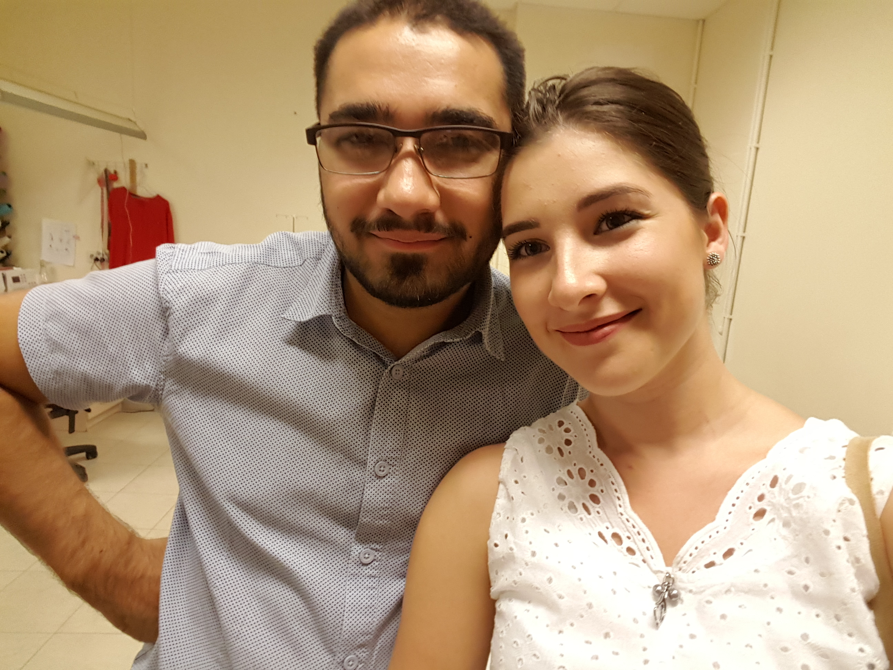
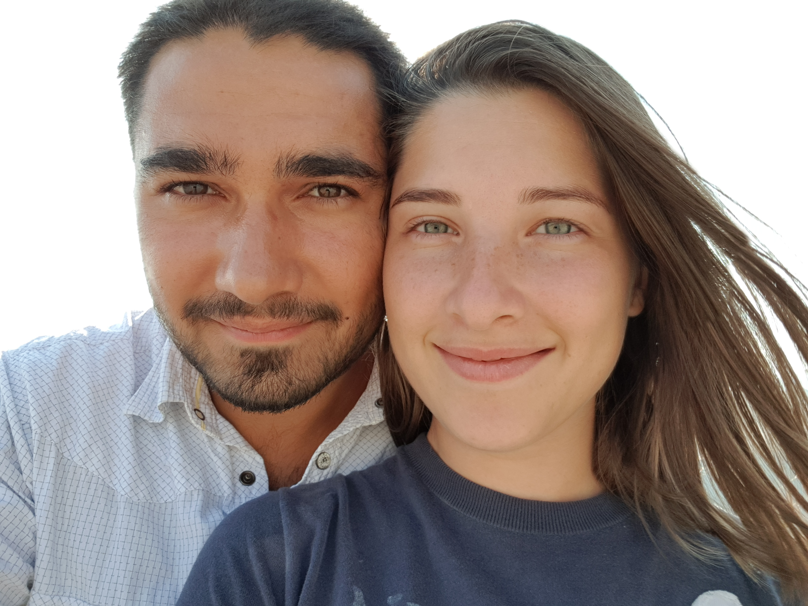

Здравствуйте я репетитор Математики и
Компьютерной грамотности, в сфере обучения больше
четырех лет, работаю с разными людьми, от раннего до почтенного
возраста. Имеется большой опыт работы компьютерным мастером,
обучаю владению таких приложений как Exel Word. Помогаю решать
проблемы возникшие с электронными устройствами, шифровать жесткие
диски и флешки, создавать запароленные архивы, копию важных файлов
на облаке а так же очищать компьютер от ненужных копий. Я стараюсь
искать индивидуальный подход к каждому, внимательный и терпеливый.
Так же учитываю возможности и особенности человека. Уже после
первых занятий чувствуется хороший ощутимый рост знаний. Уроки
провожу дистанционно, пользуясь приложением Zoom. Буду рад помочь
вам в стремлении научиться чему то новому.